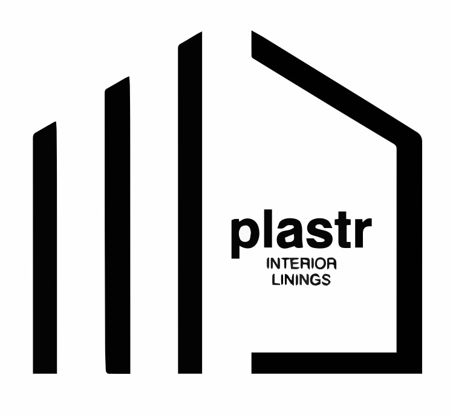

About Plastr
Plastr is a family‑owned plastering business founded by brothers Andrej and Dejan (DJ). Known online as @drywallgangsters, they’ve built more than just a following; they’ve built a reputation across South East Queensland for precision plastering, flawless finishes and no shortcuts.
We deliver end‑to‑end plastering solutions for new builds and renovations, ensuring every stage of your project is handled with care and expertise.
- Family owned & operated
- Skilled & approachable — professional, straightforward, easy to work with
- Every job done right — lines, joints and curves completed with pride
- Communication you can count on — clear updates, no surprises
- Tidy from start to finish

Service area
Sunshine Coast
From Caloundra north — new builds & renovations.
North Brisbane
From Caboolture through to the northern suburbs.
South Brisbane
Across Brisbane’s southside and surrounds.